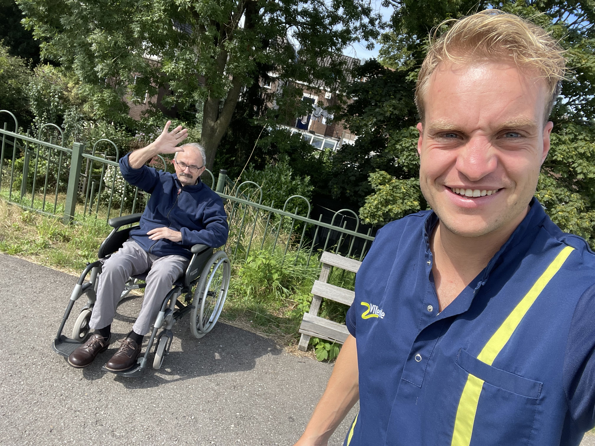
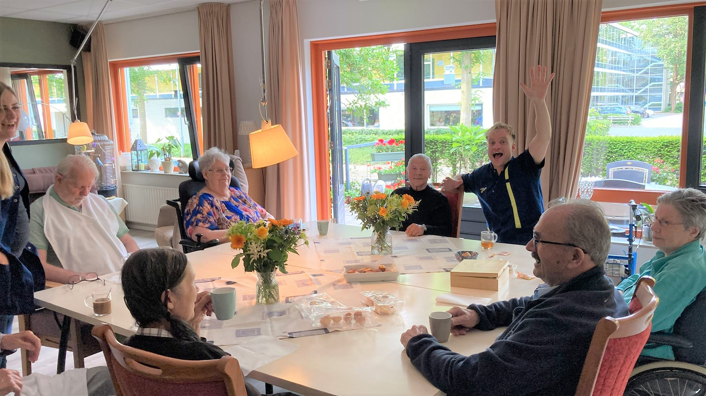
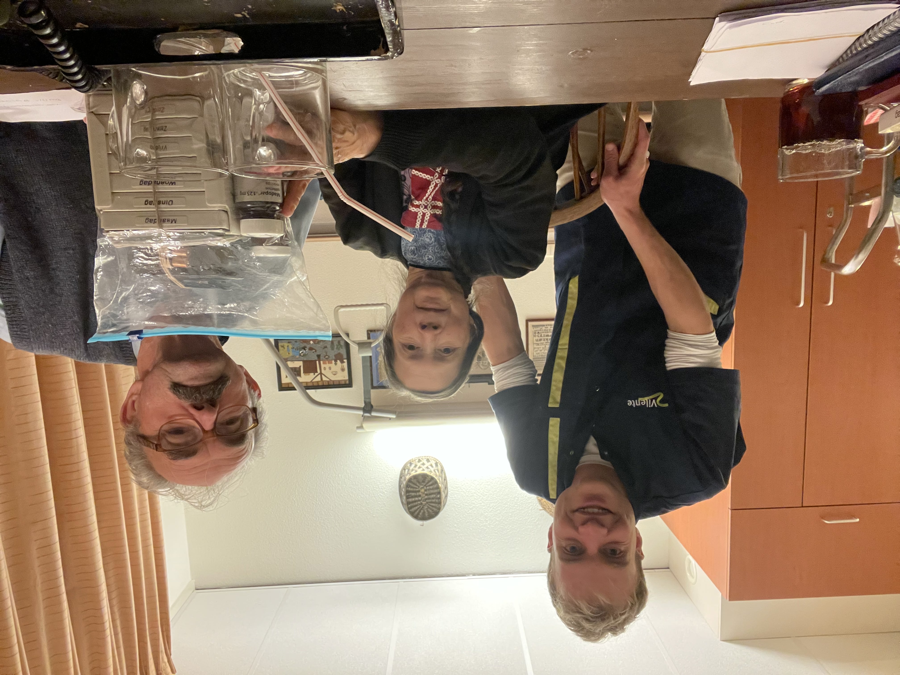
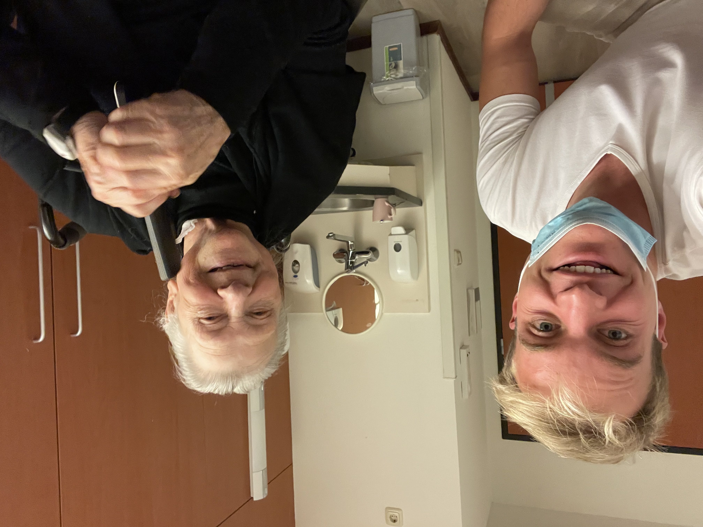

01 One last greeting
to Vilente
About the experiences at Vilente.
The nursing home in Wageningen where I
enjoyed working for three years
During my student days I was tipped for a job as a living room helper in a nursing home for the elderly Vilente, a stone's throw from my student house in the Dutch city Wageningen. Although my first impression was that it was a job mainly for women, it turned out to be a bull's eye. The job was very favourable because I could be there within 5 minutes, could work whenever I wanted and received a nice bonus on the weekends. The work itself was tailor-made for me. I didn't have to do heavy care tasks such as showering people or helping to go to the toilet, but I cooked a nice meal and made sure there was a pleasant atmosphere in the living room. I put a resident in the wheelchair and we would walk past my student house together to get some spice jars for the meal. During my graduation thesis, it was a relief to be among people after a long day at the computer and to perform the tasks that were almost the same every day. It feels like a privilege to have been able to care for these elderly people who were entering the last phase of their lives. The residents I got to know at the Vilente nursing home had such fascinating stories with them, some of which I would like to highlight. To respect the privacy of the residents, I have used fictitious names.
The residents told me about what they had experienced, including of course stories about the war. While the Netherlands during the second world war, was occupied by the Germans, Japan had taken the Dutch colony of the Dutch East Indies, present-day Indonesia. Mrs. Jansen was in one of those Japanese camps in 1944 and had to learn to beat flies to death by the Japanese authorities to get her food. Mrs. de Vries could still remember the liberation in 1945 well. The English bombed a bridge at Wijk bij Duurstede, near Utrecht, which could be heard from her sleeping room. Mrs. Peters lost her brother who was sent out as a soldier for the United Nations to the Korean War (1950-1953). She pointed me to a Dutch documentary about it , ‘De laatste patrouille’ which meant The Last Patrol in English.
Sometimes even in old age a special new bond was formed. A man and a woman from The Hague only met on Vilente and turned out to be inseparable. But there was also a very sweet woman who unfortunately never found love. And also the reality of death was part of the work. During my service the 103 year old Mrs. de Jong died. Her daughter, who regularly came to visit, was already at such an age that walking independently was no longer a matter of course for her. Mrs. Jansen came back from the hospice to Vilente because she was expected to die but she didn't.
Mrs. van den Berg told me that at school the master gave her a slap on the fingers with the ruler. Her brother had a cleft lip and was made fun of by the teacher, after which the family changed schools. When the weather was nice, I took a resident in a wheelchair for a walk along the Wageningen floodplains. Mr. Bakker would jokingly yell at passers 'Stand aside, the intellect is coming along!'. And there was also an astonishingly funny lady with dementia who asked me again and again if I happened to be studying to become a pastor. Or Mr. de Boer who sometimes went to give a speech before dinner in front of the whole house. A story circulated about a Wageningen family with no fewer than 21 children. Always something happened, like singing songs together all evening, like this song of Benny Neyman.
After having worked in almost all residential groups, I ended up working more often in a ground floor apartment where no elderly people with dementia lived, but mainly people with physical disabilities. When the idea was thereto go abroad as an expat, and I wanted to save extra money, I started working more and more hours and this naturally made the bond with the residents closer. Here an extra sugar cube, there a cup of buttermilk or a cup of tea without sugar but with a spoon. Every resident with his or her habits brought from home. If the glass was not completely filled, Mrs. Pul said the Dutch expression 'It's not on the receipt, is it?', I even started to miss those remarks. One who will always remain with me is Mrs. Jansen. During the coffee round I walked past her room and we chatted. That always clicked so well. She was so patient, thoughtful and wise, always a listening ear and clear advice. Sometimes I even went to her after work to have a chat. Her grandchildren visited their grandmother for advice when their relationship was over.
The bond with the Visser family was exceptional, a man with very authentic but dusty clothes and a woman with a hair band and a Dutch dress. Because of their limitations, they were "lucky" to be placed in the same residence. However, the bedrooms were separate from each other. Mr. Visser much preferred to sleep well with his wife, so he slipped out of his room at night to lie down with his wife. In the end, the caretakers decided to convert the two individual rooms into one shared bedroom and living room so that they could sleep together. Every evening at the stroke of 8 o'clock I found them next to each other in that living room, just ready to play a game of jokes. The click between me and this couple came about because they had been to Australia just like me. Mr. Visser invited me to sit on their homemade chairs and we took the time to discuss the experiences in 'Down under'. During the conversation, Mrs. Visser often made an attempt to try to link me to one of the nurses she kept all closely in her sight. Their tiny room was beautifully decorated with wooden pots, old clogs, a doll's house, picture frames and old furniture. Before the Visser couple had come to Vilente, they had an old farm in the Dutch town called Amerongen. Passing cyclists were offered a cup of tea with a cake in their barn, after which they were told 'You can give what you can spare' at the moment of leaving. A beautiful traditional simple existence, full of warmth and love, which I admired immensely.
A few weeks before my departure I walked into the residential group and to my great sadness I saw Mrs Visser's condolence card. I was shocked and for a moment it felt as if my grandmother had died. What a heart of gold this woman had. Mr. Visser was of course devastated and decided to return to the nursing home in Amerongen. A week later, the rooms, which still reminded me of the Visser family, were again occupied by new residents, which made me realize once again how hard life can be. Perhaps it was just a good time to say goodbye after three beautiful years. We took a final group photo with the entire residential group, after which I said goodbye to residents and colleagues. I got a sweet look from Mrs. Jansen, who I will soon send a card from abroad. Mr. de Groot, who always loved it when he could joke with a man, had specifically asked if he could see me again 'Are you going to visit Johan Cruijff?' he asked me and added 'We used to have a football with a lace. When you headed exactly on that lace it hurt a lot!'. I left Vilente with my head held high, grateful for this beautiful job, the stories and life lessons that will stay with me forever.